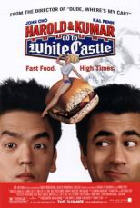
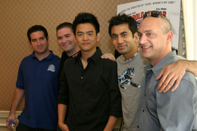

|

Combining the outrageous comic sensibilities of American
Pie with the wild open-road adventures of Road Trip,
Harold & Kumar Go To White Castle takes the buddy comedy
genre to mind-altering new highs.
Harold Lee (John Cho) is stuck in a low-level investment
banking job, overworked and definitely under-appreciated
by his colleagues, who aren’t shy about handing off
their own work for him to finish over the weekend. To
make matters worse, he can’t find the courage to talk to
his pretty neighbor (Paula Garces) from down the hall at
home.
While Harold toils away, his best friend, Kumar Patel (Kal
Penn), is doing everything he can to avoid the real
world, valiantly upholding his carefree partying ways
while making half-hearted attempts to gain admittance to
medical school and follow in his family’s footsteps.
Seeking a break from their realities, these two likable
underdogs unwind in front of their TV for a Friday night
smoke-out session, which results in an incredible case
of the “munchies.” Catching sight of a commercial for
White Castle and their mouthwatering hamburgers, Harold
and Kumar discover their true mission in life (or at
least their mission for this one Friday night) – they
must set out on an unbelievable all-night quest across
their home state of New Jersey in search of a White
Castle restaurant to satisfy their cravings.
What follows is a comic roller-coaster ride that takes
the duo on a twisted tour of the Garden State – from its
academic institutions to its scariest backwoods
territories, from shady fast-food establishments to,
just maybe…the holy grail of White Castles.

Along the way, Harold
and Kumar meet an array of crazy characters (not to
mention one rabid raccoon and an escaped cheetah on the
run…) and overcome some outrageous obstacles. Bit with
every step of the journey, they somehow manage to keep
their eyes on the tasty prize – learning more than they
bargained for about themselves and each other in the
process.
John Cho (American Pie trilogy) and Kal Penn (Malibu’s
Most Wanted) lead an accomplished cast that is peppered
with a slew of hilarious cameos, including Neil Patrick
Harris (Broadway’s “Assassins”) as himself, Fred Willard
(A Mighty Wind) as an Ivy League recruiter, Eddie Kaye
Thomas (American Pie) and David Krumholtz (Slums of
Beverly Hills) as Harold and Kumar’s neighbors, Ryan
Reynolds (Van Wilder) as a male nurse and Christopher
Meloni (TV’s “Law & Order S.V.U.”) as the bizarre
Freakshow.
Harold and Kumar Go To White Castle is directed by Danny
Leiner, who previously helmed the hit comedy Dude,
Where’s My Car? The producers are Greg Shapiro and
Nathan Kahane. The executive producers are Joe Drake,
Carsten Lorenz, Hanno Huth, J. David Brewington, Jr. and
Luke Ryan. The co-producer is J. Miles Dale. The film
was written by Jon Hurwitz & Hayden Schlossburg.
New Line Cinema releases Harold & Kumar Go To White
Castle (rated R by the M.P.A.A. for “strong language,
sexual content, drug use and some crude humor”)
nationwide on July 30th, 2004.
|